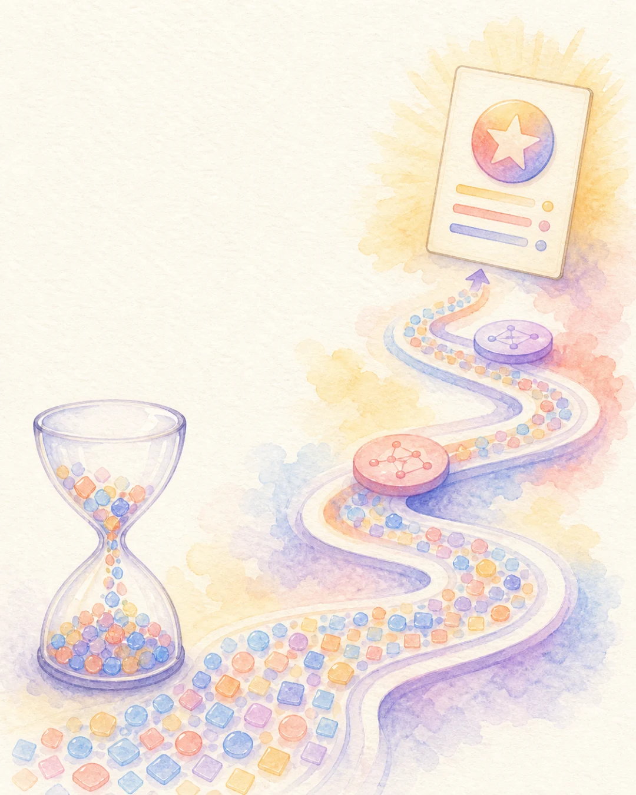
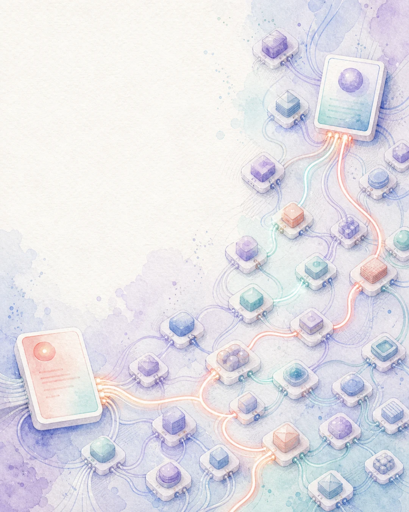
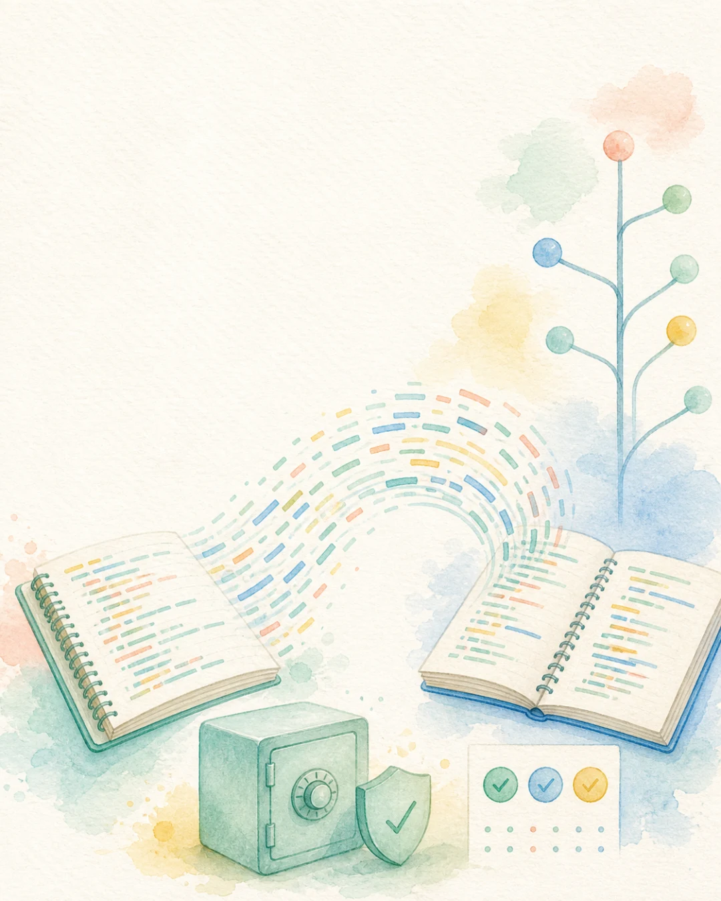
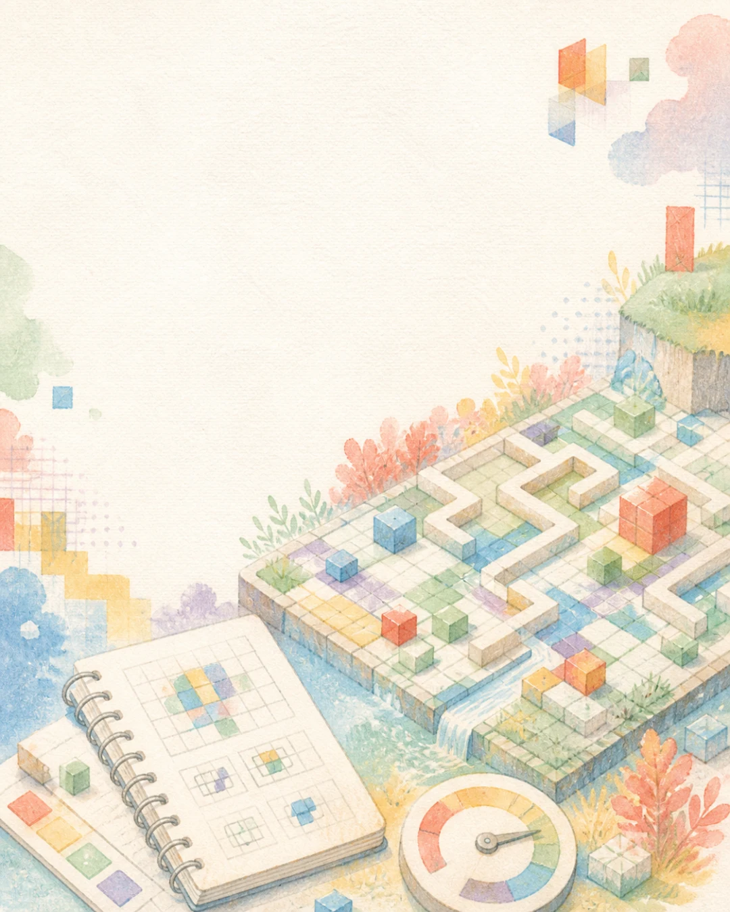

DEEPSEEK | V4 FLASH
DeepSeek가 공개한 DeepSeek V4 Flash 0731
DeepSeek는 7월 31일 V4 Flash 0731을 정식 공개했습니다.
프리뷰를 교체한 고속 모델로 코딩과 도구 사용 성능을 크게 높였습니다.
API와 MIT 라이선스 가중치를 함께 제공합니다.
7월 31일 출시 | MIT 오픈웨이트와 API
좌우로 밀거나 방향키, Space, Home, End 키로 이동할 수 있습니다.

DEEPSEEK | V4 FLASH
DeepSeek는 7월 31일 V4 Flash 0731을 정식 공개했습니다.
프리뷰를 교체한 고속 모델로 코딩과 도구 사용 성능을 크게 높였습니다.
API와 MIT 라이선스 가중치를 함께 제공합니다.
7월 31일 출시 | MIT 오픈웨이트와 API
CACHE | INPUT | OUTPUT
1M 토큰당 일반 입력 $0.14, 출력 $0.28입니다.
캐시 적중 입력은 $0.0028입니다.
Cache $0.0028 | Input $0.14 | Output $0.28

284B TOTAL | 13B ACTIVE
전체 284B 중 토큰마다 13B가 계산에 참여합니다.
1M 컨텍스트와 최대 384K 출력을 지원합니다.
284B total | 13B active | 1M context

TERMINAL | DEEPSWE
공식 표에서 Terminal-Bench 2.1은 82.7점입니다.
Artificial Analysis 지수는 52점이며 출력 토큰 사용량도 많았습니다.
Terminal 82.7 | DeepSWE 54.4 | AA 52
OPEN WEIGHTS
가중치와 저장소는 MIT 라이선스로 공개됐습니다.
로컬 실행도 가능하지만 전체 가중치를 올릴 장비가 필요합니다.
Open weights | MIT | 대형 GPU 구성 필요

PRICE IS NOT TOTAL COST
Artificial Analysis 평가에서는 출력 토큰을 많이 사용했습니다.
완료율뿐 아니라 작업당 토큰, 시간과 총비용을 함께 봐야 합니다.
AA 출력 210M | 속도 120 tok/s | 총비용 확인
1 / 6
스와이프 · 방향키 · Space지금 읽는 내용
1 · 고속 오픈 모델
DeepSeek V4 Flash 0731은 2026년 7월 31일 정식 공개됐습니다. 적은 활성 파라미터와 추측 디코딩을 이용해 속도와 에이전트 성능을 함께 노린 모델입니다.
지금 읽는 내용
2 · 초저가 API
DeepSeek 공식 API 요금은 1M 토큰당 캐시 입력 0.0028달러, 일반 입력 0.14달러, 출력 0.28달러입니다.
지금 읽는 내용
3 · 경량 MoE
DeepSeek V4 Flash는 총 284B, 활성 13B 규모의 MoE 모델입니다. API 문서는 1M 컨텍스트와 최대 384K 출력을 안내합니다.
지금 읽는 내용
4 · 코딩 성능
공식 평가에서 Terminal-Bench 2.1 82.7, DeepSWE 54.4를 기록했습니다. Artificial Analysis는 max 설정에 52점을 부여했습니다.
지금 읽는 내용
5 · MIT 가중치
DeepSeek V4 Flash 0731은 MIT 오픈웨이트 모델입니다. 소프트웨어 이용 조건은 단순하지만 284B 전체 가중치와 긴 컨텍스트를 처리할 GPU 메모리는 별도 문제입니다.
지금 읽는 내용
6 · 토큰 사용량
DeepSeek V4 Flash는 토큰 단가는 낮고 출력 속도는 빠르지만, max 추론 평가에서는 응답 길이가 길었습니다. 실제 업무 비용은 한 건을 끝내는 데 쓴 총토큰으로 계산해야 합니다.